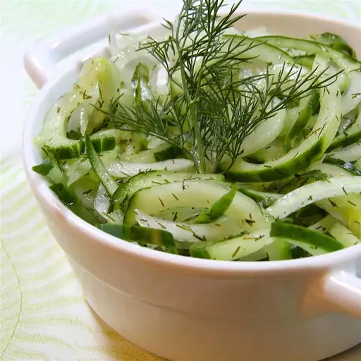

Cucumber Salad

Refreshing Cucumber Salad
Cool off with this refreshing cucumber salad recipe
- 4 cucumbers, thinly sliced
- 1 small white onion, thinly sliced
- 1 cup white vinegar
- ¾ cup white sugar
- ½ cup water
- 1 tablespoon dried dill, or to taste
- Toss sliced cucumbers and onion together in a large bowl. Set aside.
- Combine vinegar, sugar, and water in a saucepan over medium-high heat; bring to a boil;
pour over cucumbers and onions in the bowl.
- Stir in dill. Cover and let marinate in the refrigerator for at least 1 hour before serving.